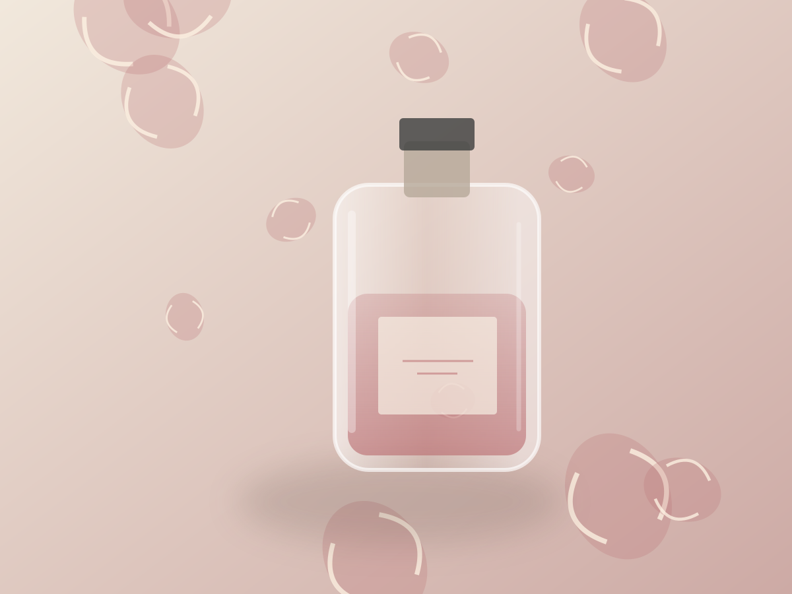

Guías
Duración, proyección y estela: no son lo mismo
Tres conceptos que se confunden mucho cuando hablamos del rendimiento de una fragancia.

Duración: cuánto tiempo se percibe
La duración describe cuánto tiempo puede detectarse un perfume, especialmente sobre la piel. No es una cifra fija: cambia según el tipo de fragancia, la dosis, la temperatura y la persona. Además, acostumbrarse al propio olor no implica que haya desaparecido para quienes están cerca.
Proyección: la distancia del aroma
La proyección es el alcance aproximado al que se percibe una fragancia alrededor de quien la lleva. Puede ser notable los primeros minutos y disminuir después. Una composición con gran proyección no tiene por qué durar más; son características relacionadas, pero diferentes.
Estela: lo que queda al pasar
La estela es el rastro olfativo que puede dejar alguien al moverse. Un perfume puede tener una estela discreta y seguir oliéndose de cerca muchas horas. No existe un aparato doméstico que ofrezca una medición universal para comparar estos tres rasgos, por eso las opiniones en reseñas varían tanto.
La medida que realmente importa
Si usas perfume en clase, oficina o transporte, la convivencia también cuenta. Prueba una cantidad moderada y observa cómo funciona en tu entorno. Un aroma cercano y agradable suele ser más versátil que uno que invade una habitación, por muy impresionante que parezca su rendimiento sobre el papel.
Comentarios
Los comentarios se guardan únicamente en este navegador y no se comparten con otras personas.